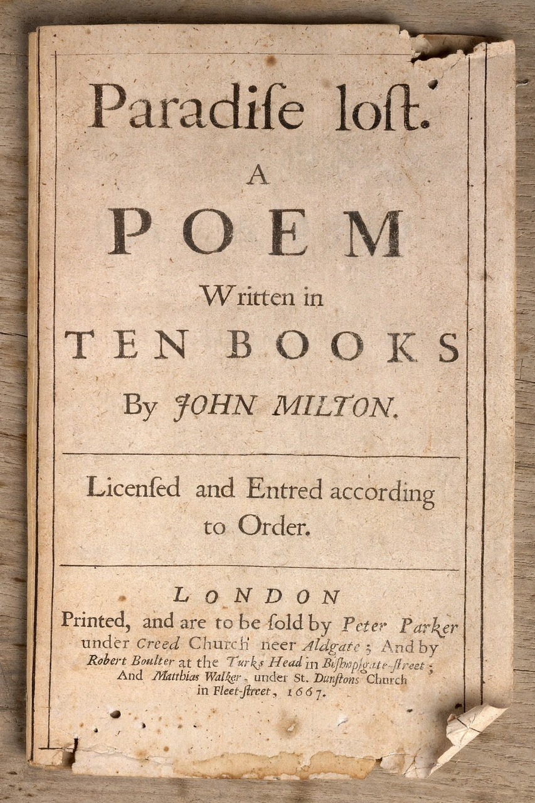

Blank verse
Blank verse is poetry written with regular metrical but unrhymed lines, almost always in iambic pentameter. It has been described as "probably the most common and influential form that English-language poetry has taken since the 16th century", used by Shakespeare, Milton, Wordsworth and many others.

History
The first known use of blank verse in English was by Henry Howard, Earl of Surrey, in his translation of Books 2 and 4 of Virgil's Aeneid (written c. 1540). Thomas Norton and Thomas Sackville introduced it to drama in Gorboduc (1561). Christopher Marlowe made it the commanding voice of the popular stage in Tamburlaine, and Shakespeare brought it to unmatched flexibility, varying caesura, enjambment and rhythm against the metrical frame.
Characteristics
An iambic pentameter line consists of five feet, each typically an unstressed syllable followed by a stressed one:
da-DUM da-DUM da-DUM da-DUM da-DUM
Because it lacks rhyme, blank verse stays close to the rhythms of English speech while retaining metrical dignity — one reason it became the default medium of serious English drama and epic, from Paradise Lost to the dramatic monologues of Tennyson and Robert Frost's "north of Boston" poems.